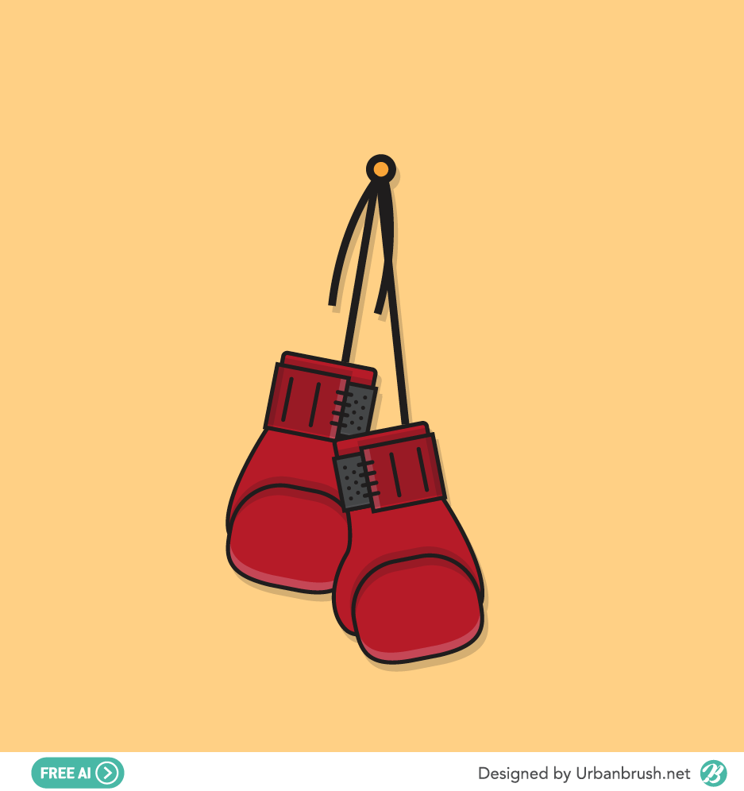

agriculture
성실한 개발자 성호진입니다
홈으로
보리

취미:
exercise
예전에 운동부였었는데 운동을 그만뒀습니다 그래서 그런지 운동을 하는 걸 좋아합니다,
music_note
그리고 노래듣는 것을 좋아하고 부르는 것도 좋아합니다 특히 산책하며 노래듣는 것을 좋아합니다
좌우명:
노력은 배신하지 않는다는 말을 좋아합니다
장래희망:
진로를 아직 찾는 중 입니다
좋아하는 음식:
fastfood
햄버거, 떡만두국
나에 대해 더 알아보기